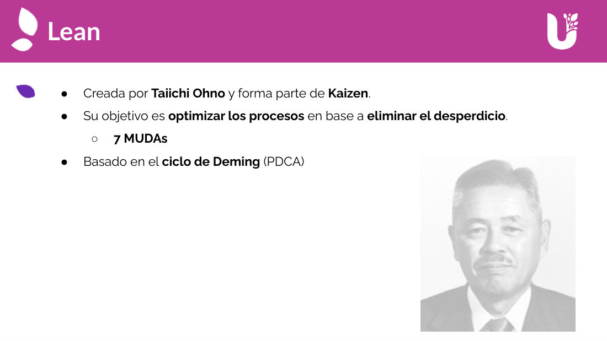
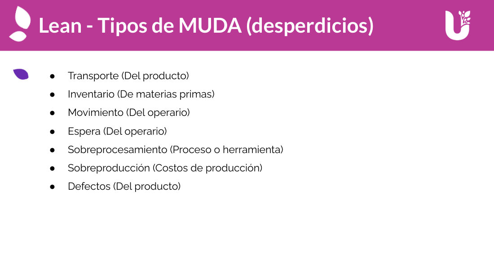
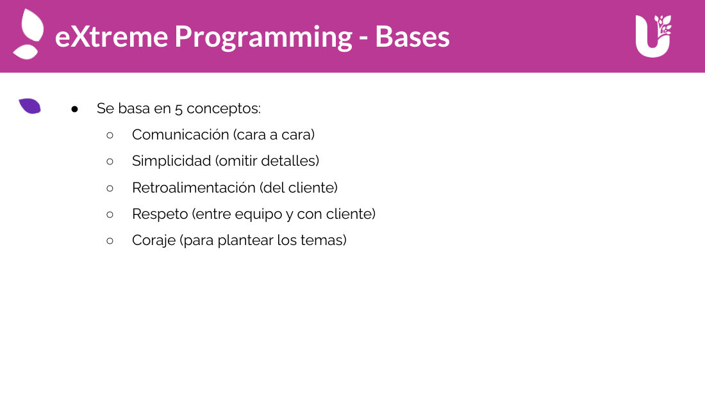
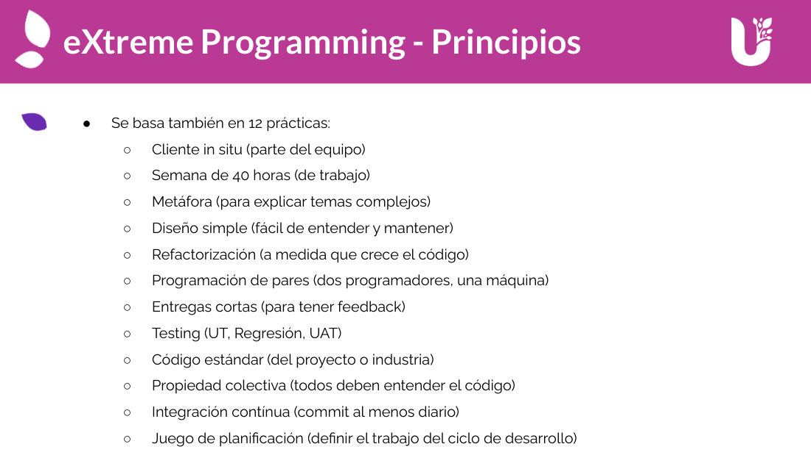

Clase 12 (1 de 2) · 28/10/2026 · Parcial del 18/11
Lean y XP: eliminar el desperdicio y construir con calidad
Qué cosas no le agregan valor al cliente y qué prácticas mantienen el código sano mientras el producto cambia.
Viene de la Clase 8 (formas de aplicar el Manifiesto) y de la Clase 11 (la retrospectiva ya era mejora continua).
Alimenta la Clase 12b · Kanban: la espera es la muda que Kanban ataca.
Antes de empezar · repaso de Clases 10 y 11
Sin mirar: ¿cuál es la única ceremonia que se repite? ¿En qué dos partes se divide la Review? ¿Qué es Sailing Boat y qué es Starfish? ¿Qué pasa con una historia que no cumple la DoR?
Así lo repasa la cátedra al abrir esta clase: la Daily es la única ceremonia que se repite (15 minutos: qué hicimos ayer, qué haremos hoy, impedimentos). La Review primero muestra el incremento y después define los pasos a seguir. En la Retro, Sailing Boat es un FODA para ver cómo está el equipo frente a nuevos desafíos, y Starfish es un brainstorming de acciones de mejora rápidas (versión simple: start, stop, continue/keep). Si una historia no cumple la DoR, no entra al Sprint. Para repasar: Clase 11 y Clase 10.
Fuente. Esta lección sigue el PDF de la cátedra «Clase 7: Kanban, Lean y XP», que corresponde a la clase 12 del cronograma. Lo que viene de fuentes públicas está marcado como complemento. Las actividades del PDF (Galletas Julieta, Trello) se dejan de lado, salvo la pregunta sobre pair programming, que sirve para el parcial.
El problema
Scrum define un marco (roles, ceremonias y artefactos), pero no dice dónde se pierde tiempo ni cómo programar con calidad. Lean pone en el centro el desperdicio; XP, la calidad técnica. Kanban, que pone en el centro el flujo, sigue en la lección 12b.
Idea 1 · Lean: eliminar el desperdicio (muda)
| Lean según la cátedra | |
|---|---|
| Origen | Creada por Taiichi Ohno; forma parte de Kaizen (mejora continua). Es el mismo origen que Kanban (12b). |
| Objetivo | Optimizar los procesos eliminando el desperdicio: las 7 mudas. |
| Base | El ciclo de Deming (PDCA): Plan, Do, Check, Act, es decir, planificar, hacer, verificar y actuar, y volver a empezar. El nombre de cada paso es complemento; la diapositiva solo dice «PDCA». |
Respuesta modelo. «Lean, creada por Taiichi Ohno dentro de Kaizen, tiene como objetivo optimizar los procesos eliminando el desperdicio, es decir, las siete mudas. Se basa en el ciclo de Deming (PDCA).» Para no confundirlo con Kanban: Lean apunta a todo el desperdicio; Kanban ataca los cuellos de botella, que generan una muda en particular, la espera.
Muda (無駄) significa «desperdicio»: todo lo que consume recursos sin agregar valor para el cliente. La cátedra enumera siete tipos, cada uno con lo que afecta entre paréntesis:


| Muda (cátedra) | Afecta a… | En una fábrica de galletitas | En un equipo de software |
|---|---|---|---|
| Transporte | Del producto | Las bandejas cruzan toda la planta entre el horno y el empaque | Una historia pasa por tres equipos antes de llegar a quien la resuelve |
| Inventario | De materias primas | Harina comprada para seis meses, ocupando depósito | Diez historias empezadas y ninguna terminada |
| Movimiento | Del operario | El operario camina hasta otro sector a buscar cada molde | El desarrollador va y viene entre tres herramientas para registrar un cambio |
| Espera | Del operario | El empaque está parado hasta que salga la tanda del horno | El equipo frena hasta que otra área publique la API |
| Sobreprocesamiento | Proceso o herramienta | Tres controles de calidad idénticos sobre la misma tanda | Tres aprobaciones para cambiar un texto |
| Sobreproducción | Costos de producción | Se hornea más de lo que se vendió | Una funcionalidad que nadie pidió ni usa |
| Defectos | Del producto | Galletitas quemadas o rotas que hay que descartar | Errores que obligan a rehacer el trabajo |
Los dos ejemplos son propios. El de la fábrica sigue el estilo de la actividad de la clase (identificar desperdicios en un proceso de producción); el de software aplica la aclaración de la cátedra (qué se mueve, quién espera, qué sobra). Complemento: Lean software development (Poppendieck, 2003) traduce las siete al software con otros nombres: trabajo parcialmente terminado (inventario), funcionalidades extra (sobreproducción), procesos extra (sobreprocesamiento), cambio de tarea (transporte), traspasos (movimiento), esperas y defectos.
Los tres pares que se confunden
| Par | Cómo distinguirlos |
|---|---|
| Transporte / movimiento | ¿Qué se mueve de más? Si es el producto, transporte. Si es la persona, movimiento. |
| Movimiento / espera | Los dos son «del operario». En movimiento el operario se desplaza sin agregar valor; en espera está parado. |
| Sobreproducción / sobreprocesamiento | Sobreproducción es hacer más cantidad de la que se pidió. Sobreprocesamiento es trabajar de más sobre lo mismo: pasos, controles o herramientas que el cliente no necesita. |
Para memorizar la lista de la cátedra: dos «del operario» (movimiento y espera), dos «del producto» (transporte y defectos) y tres sueltos (inventario de materias primas, sobreprocesamiento del proceso o herramienta, sobreproducción por costos de producción). La cátedra muestra siete; el octavo de otras fuentes (habilidades no utilizadas) no figura en la diapositiva.
Sigue en la 12b. La pregunta de final que une Lean con Kanban (espera → cuello de botella → Kanban) está en la Clase 12b.
PDCA, el ciclo de Deming. Es un ciclo de mejora continua: se planifica un cambio, se hace en chico, se verifica si funcionó y se actúa (se adopta o se corrige), y se vuelve a empezar. Es la misma lógica que ya apareció dos veces: el empirismo de Scrum (inspección y adaptación) y la retrospectiva con sus planes de acción y su seguimiento. Kaizen es el nombre japonés de esa mejora continua.
Complemento (no está en la cátedra). Las fuentes públicas distinguen la muda de tipo I, que no agrega valor pero es necesaria, de la de tipo II, que no agrega valor, es innecesaria y es la que se elimina. Lean software development (Poppendieck, 2003) resume Lean en siete principios: eliminar el desperdicio, amplificar el aprendizaje, decidir lo más tarde posible, entregar lo más rápido posible, empoderar al equipo, construir la calidad desde adentro y optimizar el todo.
Idea 2 · Extreme Programming (XP): buenas prácticas de los equipos
Según la cátedra, XP nació en Chrysler en los 90 de la mano de Kent Beck. Es un conjunto de buenas prácticas que Beck recolectó de sus equipos y es previo al Manifiesto ágil (2001, Clase 8). Mientras Lean y Kanban vienen de la fábrica (Toyota), XP viene del desarrollo de software.


Cinco bases (conceptos). Cada una con su aclaración de la cátedra: comunicación (cara a cara), simplicidad (omitir detalles), retroalimentación (del cliente), respeto (entre el equipo y con el cliente) y coraje (para plantear los temas).
XP y el Manifiesto. XP es anterior al Manifiesto y Kent Beck fue uno de los 17 firmantes, así que varias ideas de XP aparecen después como valores y principios: comunicación cara a cara es el principio 6; cliente in situ es «colaboración con el cliente» y el principio 4; semana de 40 horas es el ritmo sostenible del principio 8; entregas cortas, el principio 3; diseño simple, el principio 10 (Clase 8). El emparejamiento es propio.
| Las 12 prácticas (cátedra) | Qué quiere decir | En la web de reservas (ejemplo propio) |
|---|---|---|
| Cliente in situ | El cliente es parte del equipo | Alguien que conoce el negocio de los restaurantes trabaja con los desarrolladores |
| Semana de 40 horas | De trabajo, sin horas extra crónicas | No se llega a la entrega a fuerza de noches |
| Metáfora | Para explicar temas complejos | «La disponibilidad es una libreta de turnos con casilleros que se tachan» |
| Diseño simple | Fácil de entender y mantener | Sumar un restaurante no obliga a tocar el código de las reservas |
| Refactorización | A medida que crece el código | Ordenar el código de los filtros cuando se suma el quinto |
| Programación de pares | Dos programadores, una máquina | Uno escribe el cálculo de mesas libres, el otro revisa en vivo |
| Entregas cortas | Para tener feedback | Publicar primero «buscar y reservar» y escuchar a los comensales |
| Testing | Pruebas unitarias (UT), de regresión y de aceptación del usuario (UAT) | Cada cambio se prueba sin romper las reservas que ya funcionaban |
| Código estándar | Del proyecto o de la industria | Todos nombran las funciones igual |
| Propiedad colectiva | Todos deben entender el código | Si falta quien hizo los filtros, otro puede cambiarlos |
| Integración continua | Commit al menos una vez por día | El código de todos se junta y se prueba a diario |
| Juego de planificación | Definir el trabajo del ciclo de desarrollo | Elegir qué historias entran en la próxima entrega |
Las tres pruebas del testing. UT (unit test, prueba unitaria): revisa una pieza chica de código. Regresión: confirma que lo nuevo no rompió lo que ya andaba. UAT (user acceptance test): el usuario o el cliente confirma que hace lo que pidió. El detalle de cada sigla es complemento; la diapositiva solo las nombra.
Para memorizar las doce: tres sobre personas (cliente in situ, semana de 40 horas, programación de pares), cuatro sobre código (diseño simple, refactorización, código estándar, propiedad colectiva), tres sobre entregar y probar (entregas cortas, testing, integración continua) y dos para explicar y planificar (metáfora, juego de planificación). En otras fuentes algunas cambian de nombre: «equipo completo» por cliente in situ, «ritmo sostenible» por semana de 40 horas, «TDD» por testing. En el parcial conviene usar los de la cátedra.
La pregunta de la cátedra: ¿pair programming es un desperdicio?
La clase terminó con este debate, que une XP con Lean. Vale para practicar porque no alcanza con decir sí o no: hay que fundamentar con la lista de mudas.
Antes de abrir: armar una respuesta de tres o cuatro líneas. ¿Qué muda podría parecer? ¿Cuáles evita?
Una respuesta posible. A primera vista parece sobreprocesamiento, porque son dos personas para una tarea. Pero evita otras mudas: menos defectos, porque el código se revisa mientras se escribe; menos espera, porque no hay que aguardar una revisión posterior; y menos dependencia de una sola persona, porque el conocimiento se comparte (propiedad colectiva). Por eso no es desperdicio si se usa en tareas complejas o riesgosas. En una tarea trivial sí puede serlo. La cátedra no dio una respuesta única: lo que se evalúa es el fundamento.
Práctica 1 · Recuperar sin mirar
Sin volver arriba: los siete tipos de muda de la cátedra, con lo que afecta cada uno.
Transporte (del producto), inventario (de materias primas), movimiento (del operario), espera (del operario), sobreprocesamiento (proceso o herramienta), sobreproducción (costos de producción), defectos (del producto).
Sin volver arriba: el objetivo de Lean, su origen y en qué ciclo se basa.
Optimizar los procesos eliminando el desperdicio (las 7 mudas). Taiichi Ohno, dentro de Kaizen. Se basa en el ciclo de Deming (PDCA).
Sin volver arriba: el origen de XP, sus cinco bases y las doce prácticas (usar la regla 3-4-3-2).
Chrysler, años 90, Kent Beck; buenas prácticas de sus equipos, antes del Manifiesto. Bases: comunicación, simplicidad, retroalimentación, respeto, coraje. Prácticas: cliente in situ, semana de 40 horas, programación de pares · diseño simple, refactorización, código estándar, propiedad colectiva · entregas cortas, testing, integración continua · metáfora, juego de planificación.
Práctica 2 · Preguntas
Un equipo tiene diez historias a medias porque cambia de tarea cada día. ¿Qué desperdicio Lean describe mejor el problema?
¿Cuál de estas prácticas pertenece a XP?
El equipo frena hasta que otra área publique la API. ¿Qué tipo de muda es, según la cátedra?
¿Qué lista contiene solo bases (valores) de XP?
Según la cátedra, ¿cuál es el objetivo de Lean?
¿Qué afirmación sobre el origen de XP es correcta, según la cátedra?
Trampas de opción múltiple
| La opción tentadora | Por qué está mal |
|---|---|
| «El objetivo de Lean es eliminar cuellos de botella» | Ese es el de Kanban. Lean: optimizar los procesos eliminando el desperdicio |
| «Lean se basa en el empirismo» | El empirismo es de Scrum. Lean se basa en el ciclo de Deming (PDCA) |
| «Las mudas son ocho» | La cátedra muestra siete |
| «Espera (del producto)» | La espera y el movimiento son del operario; del producto son transporte y defectos |
| «XP nació en Toyota» o «la creó Taiichi Ohno» | XP: Chrysler, años 90, Kent Beck. Toyota y Ohno son Lean y Kanban |
| «XP surgió a partir del Manifiesto» | Es previo al Manifiesto ágil (2001) |
| «XP tiene 12 bases y 5 prácticas» | Al revés: 5 bases y 12 prácticas |
| «Transparencia» como base de XP | Es un pilar de Scrum. Bases de XP: comunicación, simplicidad, retroalimentación, respeto, coraje |
| «Daily Scrum» o «límite de WIP» como práctica de XP | Son de Scrum y de Kanban. De XP: programación de pares, integración continua, refactorización, cliente in situ… |
| «Integración continua: commit una vez por Sprint» | Commit al menos diario |
| «Semana de 40 horas» como práctica de Lean | Es una de las 12 prácticas de XP |
Para repasar: glosario y hoja de repaso ágil (imprimible).